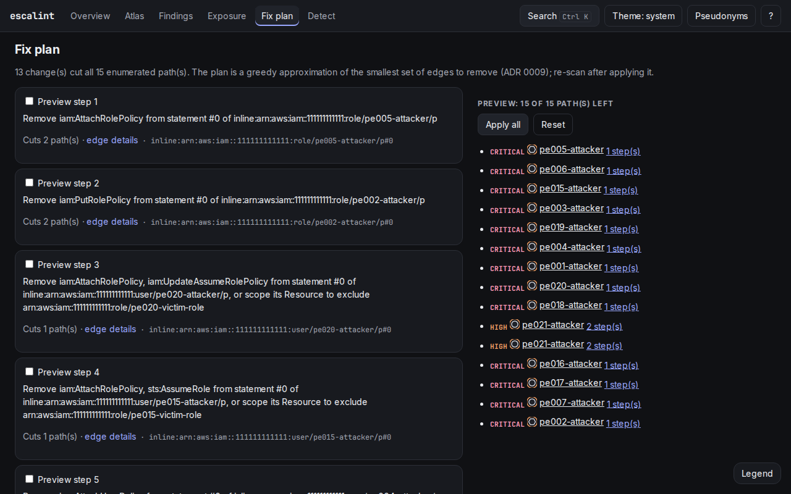

An IAM principal rarely has AdministratorAccess directly. What it usually has is
iam:PassRole plus lambda:CreateFunction, or iam:CreatePolicyVersion on a policy
attached to itself, or permission to assume a role whose trust policy it can rewrite. Read on its own, none
of these policies looks dangerous. The problem shows up when permissions from different principals and
accounts are put together.
I wrote escalint, an open source tool in Go, to find
those combinations. It reads an IAM snapshot of one or more AWS accounts, evaluates the policies the way AWS
does, builds a graph of who can act as whom and draws every path that ends in administrator, with an
explanation for each step and the smallest set of changes it finds to cut those paths.
There is a live demo with synthetic data that runs
entirely in the browser.
Existing tools
For attackers
Attackers have modern, maintained tools for AWS. Rhino Security Labs'
Pacu is an exploitation framework with modules
that enumerate permissions and carry out the escalation. Bishop Fox's
CloudFox maps an account's attack surface from
compromised credentials. Datadog's Stratus Red
Team emulates cloud attack techniques mapped to MITRE ATT&CK. They gain support for new services
and newly published techniques shortly after those appear.
For defenders
For defenders who want to know effective access in IAM, the options are weaker:
- Prowler is the reference open source CSPM and covers a lot: hundreds of configuration checks across several providers (public S3, open security groups, encryption, logging). Its escalation checks look at one policy at a time, searching for dangerous combinations of actions, and do not answer a question like "can this principal, by assuming that role, reach admin in two steps?".
- NCC Group's PMapper was the first to treat IAM as a graph. It has gone years without a meaningful update, and its catalog of techniques and services has stood still.
- Duo Labs' CloudMapper stopped in 2022. Salesforce's Cloudsplaining produces good reports on overly permissive policies, but it analyzes each policy in isolation and its future is uncertain.
In December 2025, Datadog published pathfinding.cloud, an open catalog of AWS privilege escalation paths. At launch, 27 of the 65 documented paths (42%) were not detected by any of the open source tools evaluated. The catalog now has 92 paths. For many of them, the attacker has a framework that runs the technique and the defender has nothing that flags it beforehand.
Why a graph
John Lambert of Microsoft has a well-known line: "Defenders think in lists. Attackers think in graphs.
As long as this is true, attackers win." Active Directory went through this. BloodHound started as an
offensive tool and was adopted by defense teams, because a graph of attack paths shows relationships that
a list of findings hides.
IAM on AWS has the same shape. A list says "role X has iam:PassRole on *", medium severity,
somewhere among two hundred other items. The graph says "the CI user can launch an EC2 instance with role
Y, which can attach a policy to itself and becomes account admin", with the whole sequence and the place
where it can be cut.
The graph also changes how you fix things. When ten paths go through the same edge, that edge is a choke
point, and removing it fixes all ten at once. In a list, they show up as ten unrelated items.

How it works
escalint collect (read-only) or aws iam get-account-authorization-details
│
strict snapshot parsing ─────────── untrusted data, size limits
│
IAM policy evaluator ────────────── explicit deny, SCP, RCP, boundary,
│ trust policy, cross-account; trace per decision
▼
"can act as" graph ◄──────────────── 39 rules add escalation edges
│
┌──────────┬─────────┼──────────┬──────────────┐
▼ ▼ ▼ ▼ ▼
k paths tiers blast radius choke points fix plan
to Tier 0 (greedy)
│
analysis.json ──► text · JSON · SARIF · DOT · Mermaid · embedded web UI
Policy evaluation
At the core is an evaluator that follows AWS's documented logic: explicit deny in any policy, SCPs and RCPs
at each OU level, permissions boundaries, identity policies, trust policies and cross-account rules,
including NotAction, NotResource, NotPrincipal and wildcards in actions and ARNs.
Every Allow comes with a trace naming the statement that decided it. Conditions that cannot be
evaluated statically (MFA, source IP, time of day) stay in the graph: the step is marked
conditional and drawn dashed.
The graph and the rules
Nodes are principals (users, roles, groups), plus one sink per account, Tier 0, which stands for effective
admin. Edges come from 39 rules: 30 escalation paths (EL-PE), 6 trust mistakes (EL-TR, for
example GitHub Actions OIDC with no condition on sub) and 3 input diagnostics (EL-PARSE).
Every rule cites the AWS documentation, its pathfinding.cloud ID and the matching MITRE ATT&CK
techniques. The current version covers 33 of the catalog's 92 paths.
Analyses
On top of the graph, escalint computes the k shortest paths from each principal to Tier 0, privilege
tiers, blast radius, assume-role cycles, choke points and a greedy remediation plan, meaning an ordered
sequence of changes that removes every path. For each step it also lists which events CloudTrail would
record, or whether the step is a blind spot.
The interface
The UI is a strict TypeScript React app with its own WebGL renderer, embedded in the binary. It runs locally with escalint serve (only on 127.0.0.1, with a single-use token) or as a single offline HTML file produced by escalint report --html. There are nine views:
- Overview: tiers, critical paths, CloudTrail blind spots and what to fix first.
- Atlas: every principal in the account (or organization), grouped by account, with semantic zoom. Shift+click on two nodes shows the shortest path between them.
- Trace: one path step by step, with alternatives and choke points. Clicking an edge opens the policy explainer with the exact statement that allowed that step.
- Reach: what a principal can reach and who can reach it, in rings by hop count.
- Exposure, Findings, Fix plan, Detect and Diff: a principal × service matrix, a filterable table, a remediation plan with a live preview of the remaining paths, CloudTrail events per step and what changed between two snapshots.

Every graph has an equivalent table, navigation works from the keyboard and the palettes are colorblind-safe. The snapshot comes from an account that may contain hostile names and policies, so the UI uses a strict CSP and never uses innerHTML. To share a report, --redact replaces every identifier with a pseudonym.

Hands-on
Release binaries (Linux, macOS and Windows, amd64 and arm64) ship with the UI embedded, are signed with cosign and carry GitHub provenance attestations. There is also a distroless image:
# pick your platform at https://github.com/brennocm/escalint/releases
curl -sSLO https://github.com/brennocm/escalint/releases/download/v0.1.0/escalint_0.1.0_linux_amd64.tar.gz
gh attestation verify escalint_0.1.0_linux_amd64.tar.gz --repo brennocm/escalint
tar xzf escalint_0.1.0_linux_amd64.tar.gz escalint
docker run --rm -v "$PWD:/work" ghcr.io/brennocm/escalint:v0.1.0 scan /work/snapshot.jsonBasic use is three commands. collect only makes read calls (List* and Get*), and the repository publishes the minimal IAM policy it needs:
escalint collect -o snapshot.json # read-only snapshot with your AWS credentials
escalint serve snapshot.json # opens the UI on 127.0.0.1 with a one-time token
escalint scan snapshot.json # findings in the terminal; exit 1 on high or criticalIf you have no credentials at hand, use the example accounts in the repository. This is the real output (trimmed) of scan on the vulnerable account:
escalint scan examples/vulnerable-account/snapshot.json1 account(s), 66 node(s), 114 edge(s), 15 path(s) to Tier 0; 19 critical, 28 high, 57 medium, 2 info
arn:aws:iam::111111111111:role/pe002-attacker (role, tier 1)
path p_a9433adab2c37415 [CRITICAL, allowed, 1 step(s)]
1. arn:aws:iam::111111111111:role/pe002-attacker --[modify_permissions EL-PE-002]--> effective admin (111111111111)
CRITICAL EL-PE-002 Put an inline policy on its own role
arn:aws:iam::111111111111:role/pe002-attacker can act as effective admin of account 111111111111 using iam:PutRolePolicy
policy: inline:arn:aws:iam::111111111111:role/pe002-attacker/p statement #0 (snapshot line 766)
ATT&CK: T1098.003 Account Manipulation: Additional Cloud Roles
fix: Remove iam:PutRolePolicy from the role's policies, or scope its Resource to roles other than itself
and add a permissions boundary that denies it.
arn:aws:iam::111111111111:role/tr002-ci-deploy (role, tier 3)
CRITICAL EL-TR-002 GitHub Actions OIDC trust without a sub condition
any GitHub Actions workflow, in any repository, can assume arn:aws:iam::111111111111:role/tr002-ci-deploy:
the trust has no condition on token.actions.githubusercontent.com:sub
policy: trust:arn:aws:iam::111111111111:role/tr002-ci-deploy statement #0 (snapshot line 1170)
ATT&CK: T1199 Trusted Relationship; T1078.004 Valid Accounts: Cloud AccountsEach finding points to the policy and snapshot line that caused it, the ATT&CK techniques and a concrete fix. Exit codes let escalint block a pipeline: 0 with no findings above --fail-on (default high), 1 with findings and 2 for a usage error.
In CI
The use I care about most is keeping a new path from showing up unnoticed. escalint diff compares
two snapshots and fails only on added edges, paths and findings. The repository ships a GitHub Action for
a daily job: it collects with a read-only role over OIDC, compares against the previous day's snapshot and
uploads the result as SARIF to GitHub Code Scanning:
escalint diff baseline.json snapshot.json --fail-on high
escalint scan snapshot.json --format sarif --output escalint.sarifWhere escalint fits
For overall account posture, Prowler is still the right tool; escalint does not look at public buckets or
open security groups. For exploitation and offensive validation, use Pacu and CloudFox; escalint does not
assume roles, create credentials or change anything in the account.
escalint takes PMapper's place: defensive, static analysis of effective IAM access, with an explanation
for every step. Compared with it, escalint adds SCPs and RCPs, a current catalog mapped to
pathfinding.cloud, CI-ready output and a graphical interface. The idea of a self-hosted graph where no data
leaves the account came from marcelogsantos'
aws-iam-graph; escalint was written from
scratch.
Limitations
v1 does not model session policies and session tags, resource-based policies other than the trust policy
(S3 bucket policies, KMS key policies, Lambda, Secrets Manager), root users or IAM Identity Center
assignments. Request conditions are not known statically, so the affected steps stay
conditional. Coverage is 33 of pathfinding.cloud's 92 paths; most of the missing ones pass a role
to another compute service and follow the same pattern as the existing rules. The resource inventory is
regional, the remediation plan is greedy (small, but not guaranteed to be minimal) and a snapshot is only
valid for the moment it was collected: after changes, collect again.
The snapshot and the reports show who can become administrator in the account. Treat them as sensitive
data and share them only with --redact.
Final thoughts
IAM privilege escalation usually comes from several reasonable permissions, spread across different
principals and accounts, that nobody reviewed together. Attackers have tools that find and walk those
combinations; defenders, most of the time, have a list of findings.
escalint evaluates the policies the way AWS does, draws the graph, explains each edge with the statement
that allows it and suggests where to cut. That does not guarantee an account is secure, but it gives
defenders the same graph an attacker would build.